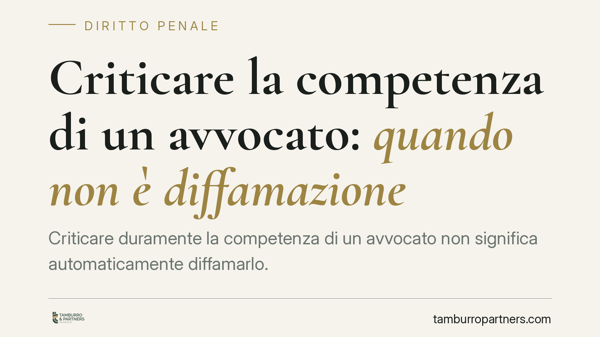

Criticare la competenza di un avvocato: quando non è diffamazione
Criticare duramente la competenza di un avvocato non significa automaticamente diffamarlo. La Corte di Cassazione ha ribadito che la critica alla prestazione professionale resta lecita quando si fonda su fatti veri, risponde a un interesse concreto e rispetta i limiti del linguaggio. Un principio che riguarda clienti, professionisti e chiunque esprima giudizi sul lavoro altrui.

Il caso
Un cittadino, insoddisfatto dell'operato del proprio legale, ne contesta apertamente la competenza professionale. Il tono è aspro. L'avvocato ritiene di essere stato diffamato e agisce in sede penale.
La questione arriva in Cassazione, che deve stabilire se contestare la capacità professionale di un avvocato — con parole dure — superi la soglia del lecito e integri il reato di diffamazione.
*Nota: il riferimento alla specifica pronuncia citato nella fonte originaria riporta un anno di deposito anomalo (2026). In attesa di verifica degli estremi esatti, l'articolo si concentra sui principi consolidati in materia, che la decisione richiamata si limita a confermare.*
Inquadramento normativo
L'art. 595 del codice penale punisce chi, comunicando con più persone, offende l'altrui reputazione. Il requisito della pluralità è centrale: per la configurabilità del reato è sufficiente la comunicazione con almeno due persone oltre alla persona offesa. Non rileva, invece, una soglia quantitativa minima "ampia": bastano due destinatari perché la condotta sia potenzialmente rilevante.
Il reato, tuttavia, può essere escluso quando l'espressione rientra nel legittimo esercizio del diritto di critica, tutelato dall'art. 21 della Costituzione. La giurisprudenza è costante nell'individuare tre requisiti che devono coesistere:
- Verità del fatto posto a fondamento del giudizio;
- Interesse concreto alla manifestazione del pensiero;
- Continenza, cioè misura e correttezza del linguaggio.
Cosa ha deciso la Cassazione
La Corte ha ricondotto la contestazione sulla competenza professionale al perimetro del diritto di critica, purché i tre requisiti siano rispettati.
Sul punto più delicato — l'interesse — va chiarito un equivoco. Nel rapporto professionale privato non serve invocare un interesse pubblico generale. L'interesse rilevante è quello concreto e specifico del cliente: contestare una prestazione ritenuta inadeguata, segnalarne le criticità, difendere la propria posizione nel rapporto deteriorato. È questo interesse, e non un astratto scopo informativo collettivo, a fondare la liceità della critica.
Resta decisiva la distinzione tra critica alla prestazione e attacco alla persona. Dire che una difesa è stata condotta male, che un atto è stato depositato tardi o che una strategia è stata inefficace significa valutare un fatto professionale. Definire il professionista "disonesto", "ladro" o "incapace" come giudizio sulla persona — senza ancoraggio a fatti concreti — fa scattare la responsabilità, perché travalica il recinto lavorativo e diventa offesa gratuita.
Implicazioni pratiche
Il principio vale in entrambe le direzioni.
Per chi esprime la critica: il giudizio severo sulla prestazione è lecito se poggia su fatti veri e resta sul merito tecnico. L'insulto personale, invece, non è coperto dal diritto di critica.
Per il professionista destinatario: non ogni critica, anche aspra, è diffamazione. Prima di agire occorre valutare se l'espressione attacchi la prestazione o la persona, e se sia stata effettivamente comunicata a più soggetti.
Il canale conta. Una recensione online, un post sui social, una mail inviata a più destinatari o un messaggio in una chat di condominio soddisfano facilmente il requisito della pluralità. Un commento rivolto a una sola persona, invece, non integra la fattispecie dell'art. 595 c.p.
Cosa fare in concreto
- Verifica i fatti prima di esprimere un giudizio pubblico: la critica regge solo se fondata su circostanze vere e documentabili.
- Resta sul merito professionale: contesta la prestazione, non la persona; evita epiteti e qualificazioni morali.
- Valuta il canale e il numero di destinatari: più ampia è la diffusione, maggiore è l'esposizione a contestazioni.
- Conserva la documentazione (atti, comunicazioni, mail) che supporta la valutazione critica.
- Se ti ritieni diffamato, raccogli le prove della comunicazione a più persone e fai valutare preliminarmente la distinzione tra critica lecita e offesa.
Conclusioni
La libertà di criticare una prestazione professionale è ampia, ma non illimitata. Il confine passa per tre parole: verità, interesse, continenza. Finché la critica rimane ancorata a fatti veri, risponde a un interesse concreto e usa un linguaggio misurato, non c'è diffamazione. Quando scivola nell'attacco personale, il quadro cambia.
Contributo informativo a cura di Tamburro & Partners Avvocati - Avv. Giuseppe Tamburro. Non costituisce parere legale.
Ogni condominio ha una storia a sé.
Se gestisci un'amministrazione e vuoi un confronto su una specifica questione condominiale, scrivi allo studio. Ti rispondiamo entro un giorno lavorativo.